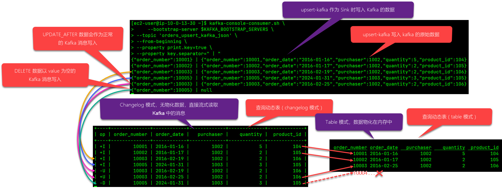

Flink 实时数仓关键技术解读：Upsert Kafka 和 动态表（Dynamic Table）
动态表本质上是一条流（stream）， upsert-kafka 映射的数据表底层存储的是类 changelog 数据，“动态表”和“upsert-kafka 映射的数据表”是两码事，但联合起来就能“在 Kafka 上维持一张可更新的数据表” ！
我们在 《Flink CDC 与 Kafka 集成：Snapshot 还是 Changelog？Upsert Kafka 还是 Kafka？》 和 《Flink 动态表 (Dynamic Table) 解读》 两篇文章中分别介绍过动态表和 upsert- kafka connector ，实际上，upsert-kafka connector 的实现很好地体现了动态表的本质，也就是它的“动态性”，本文，我们把两者结合起来，再透彻的解读一下 upsert-kafka connector 的实现原理，同时强化一遍对动态表概念的理解。
首先，我们看一下 upsert kafka 官方文档对其工作原理的解释（本文仅讨论其作为 sink 的场景）：
当作为Sink时，upsert-kafka connector 会消费一个 changelog 流，它将 INSERT / UPDATE_AFTER 数据作为正常的Kafka消息值写入 ( 即INSERT和UPDATE操作，都会进行正常写入，如果是更新，则同一个key会存储多条数据，但在读取该表数据时，只保留最后一次更新的值)，并将 DELETE 数据以 value 为空的 Kafka 消息写入（key被打上墓碑标记，表示对应 key 的消息被删除）。Flink 将根据主键列的值对数据进行分区，从而保证主键上的消息有序，因此同一主键上的更新/删除消息将落在同一分区中。
upsert-kafka connector 不同于 kafka connector 的主要地方就在于： 通过 upsert-kafka 创建的表能自动同步源端数据表的变更，（Table 模式下）查询该表的结果总能和源表实时保持一致，对于初次接触 Flink 的开发者来说会感到“非常神奇”，因为 upsert-kafka 的表数据是存储在 Kafka 上的，Kafka 并不支持更新和删除操作，但 upsert-kafka 数据表所表现出的行为与一张普通的关系数据库的表无异 。
在介绍动态表时，我们曾重点解释过“动态表是如何应对数据更新”的： 如果一个连续查询 ( Continuous Query ) 先前输出的结果会因后续新增或更新数据的加入而不再准确，就需要持续地根据新流入的数据 + 此前已接入的数据重新计算结果并更新之，这就需要流处理引擎必须“维持住”已经输出的结果，以便后续能实时地更新它们 ，这种更新场景一般发生有聚合计算的 SQL 中，而 table 模式下读取 upsert-kafka 的映射表也是“动态表支持数据更新”的一个典型例子。下面我们就通过一个实际案例来解读一下。下图源自于 《Flink CDC 与 Kafka 集成：Snapshot 还是 Changelog？Upsert Kafka 还是 Kafka？》 第3节给出的 实测数据 ：

这张由 upsert-kafka 映射出的表名为 orders_upsert_kafka_json ，它的上游是 Flink CDC 产生的 changelog 数据（并未在图中展示），Flink 读取上游 changelog 数据流后就会写入到 orders_upsert_kafka_json 这张由 upsert-kafka 映射出的表，它的存储介质是 kafka，实际“落地”的消息是上图上半部分所显示的。
首先，我们要注意“落地”到 Kafka 中的数据是 upsert-kafka 自己约定的规则和形式，数据格式本身和普通的 kafka connector 消息几乎没有差异，但通过一些是“约定”能让 upsert-kafka 准确地解析出完整的 changlog ，这些“约定”包括：更新后的数据照常写入，在读取时，根据时间戳，早的那条数据就是 -U（更新前），晚的那条就是 +U（更新后），对于删除的数据，vlaue置为 null，在读取时，同样根据时间戳，如果最后遇到了这条 value 为 null 的消息，就意味着数据已被删除，op 就是 -D（删除前）。
本文，我们把 upsert-kafka 写入到 Kafka 中的数据称之为 类changelog 数据，因为它从形式上和绝对意义上的 changelog 不有所不同（对比 CDC 数据，它没有 before, after, op 等关键信息），但 upsert-kafka 确实能从这些数据上结合约定的规则完整复原出 changelog，所以，我们会称其为 “ 类 changelog” 数据。 @2024/2/26 补充：关于 upsert-kafka 输出给下游的数据，在 Flink 介绍流上状态管理的官方文档： https://nightlies.apache.org/flink/flink-docs-release-1.18/zh/docs/dev/table/concepts/overview/ 中明确提及和解释过，确实，upsert-kafka 输出的就是这样的消息，无 -U 消息，也无 op 信息，但是，这样组织的信息确实足以支撑 upsert-kafka “推导”出状态信息，也就是哪条数据是更新的，哪条是删除的！这是通过 ChangelogNormalize 状态算子来推导的，这个算子必然维持着以记录主键为 Key 的若干状态，只有这样才能推导出 changelog !
要提醒的是：此时，我们所说的“动态表”还没有出场，它还没有创建！虽然这张由 upsert-kafka 映射出的 orders_upsert_kafka_json 已经被创建出来且有了数据，且自始至终我们也只定义了这一张表，但是，它不是我们所说的“动态表”， “动态表” 是在执行一个流式查询（例如此处的 select * from orders_upsert_kafka_json ）时启动的，它不一定是张具体的表，而是一个 Stream，虽然它的数据可以被持久化或推送到下游的Stream，准确地说，此时 Kafka 中的数据是接下来要创建的“动态表”（Stream）的 “上游”输入，而非动态表本身的数据，动态表本身的数据是在处理这些上游输入数据的过程中产生的，具体产生怎样的数据，取决于 SQL 的逻辑，这些数据也可以随时被更新，在 Table 模式下，动态表的数据是物化在内存中的 ， 这一点务必要保持清醒的认识。
在上面的案例中，左下视图是在 changelog 模式下执行 select * from orders_upsert_kafka_json 得到的查询结果，右下视图是在 table 模式下执行 select * from orders_upsert_kafka_json 得到的查询结果，它们是执行了两个持续查询的结果，也就是启动了两个 Stream ，严格地说，这两个持续查询各自创建了一个动态表（Stream），但显然右侧使用 table 模式展示的查询结果更符合“动态表”的特征。
为什么在 Table 模式下，持续查询的输出更符合人们对“动态表”具象化的理解？这里涉及到前面没有解释到的一个知识点，那就是：Flink 是怎么来“维持”住一张动态表的？它的数据到底是存放在什么地方使得它能被实时地刷新呢？这就不得不提 Flink SQL Client 的 Table 模式。当我们使用 Flink SQL Client 查询一张动态表时，默认的结果模式就是 table ，我们在该模式下看到的动态表的各种行为，包括实时地增量更新以及删除记录都符合我们对动态表的预期：
以上图为例，图中的四个红色箭头足以说明 changelog 和 动态表之间的关系了，我们想象一下右下方 table 模式下的这张 upsert-kafka 的映射表，它一开始只有10001，10002，10003三条数据，后来新加入了一条 10005，然后 10003 又更新了 order_date，再后来，10005 又被删除，这些变化都在这张表的 table 模式下都可以观察到，
所以，再次总结一下： 动态表本质上是一个 Stream， upsert-kafka 映射的数据表底层存储的是类 changelog 数据，“动态表”和“upsert-kafka 映射的数据表”是两码事，但联合起来就能“在 Kafka 上维持一张可更新的数据表”，一个是从数据上，upsert-kafka维护的类 changelog 数据除了包含数据本身，还得能“表达”是何种操作（INSERT、UPDATE 和 DELETE 三种中的一种）这为持续更新动态表提供了保证；二是从维持查询结果上，在 table 模式下，Flink 会将动态表的数据物化在内存中，以备随时更新或删除，当然，也可以持久化到下一张 upsert-kafka 的映射表中，正是这两项技术构成了实时数仓的技术基石 。
Flink 实时数仓关键技术解读：Upsert Kafka 和 动态表（Dynamic Table）
https://laurence.enlightgram.com/flink/flink-upsert-kafka-dynamic-table/